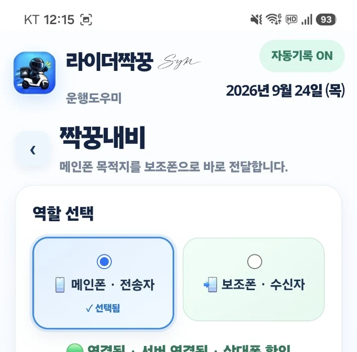

PAIRING & STATUS
역할과 연결상태 확인
메인폰·보조폰 역할을 정하고 연결됨 상태를 확인한 뒤 목적지 전송을 사용합니다.
배달앱을 계속 사용하는 메인폰과 내비를 보여주는 보조폰의 역할을 나눕니다.
주문 확인과 배달앱 조작은 메인폰에서 유지하고, 목적지만 보조폰으로 전송합니다.
보조폰은 전달받은 목적지를 받아 선택한 내비 또는 배달내비 화면을 실행하는 역할로 사용합니다.
메인폰과 보조폰을 QR로 연결해 두 기기의 짝을 정합니다. 매번 QR을 다시 찍는 방식이 아닙니다.
핫스팟이나 블루투스 직접 연결이 기본이 아니라 인터넷을 통한 연결 구조로 두 기기의 상태를 유지하고 재연결합니다.
메인폰·보조폰 역할과 연결 상태를 확인하는 화면입니다.

메인폰·보조폰 역할을 정하고 연결됨 상태를 확인한 뒤 목적지 전송을 사용합니다.
메인폰과 보조폰에서 라이더짝꿍을 준비합니다.
배달앱을 쓰는 폰은 메인폰, 길안내용 폰은 보조폰으로 지정합니다.
최초 한 번 QR을 이용해 두 기기를 서로 연결합니다.
두 기기 모두 연결됨 상태인지 확인한 뒤 사용을 시작합니다.
두 기기의 인터넷 연결과 메인폰·보조폰 역할을 먼저 확인하고, 최초 QR 페어링이 완료된 조합인지 확인합니다.
보조폰이 수신자 역할인지 확인한 뒤 메인폰에서 목적지 전송이 실제로 발생했는지 확인합니다.
보조폰에 선택한 내비 앱이 설치되어 있는지와 해당 내비 선택 상태를 확인합니다.
자동 재연결이 완료될 시간을 두고 두 기기의 연결됨 표시가 복구된 뒤 다시 목적지를 전송합니다.